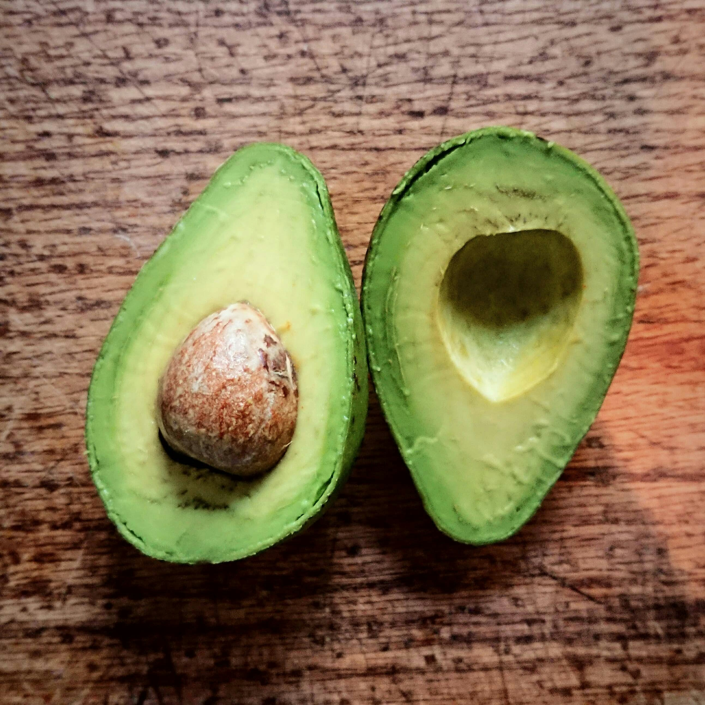
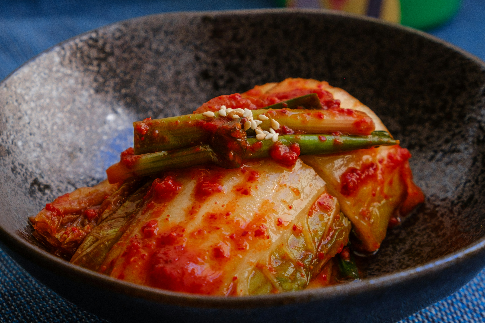

 |
1. AvocadoThey are creamy, nutrient-rich fruits. |
2. KimchiKimchi is a traditional Korean dish |
 |
3. Stir FryStir fry with vegetables, mushrooms, and tofu |
Please send messages if you have any comments or messages for me. takao.riko.y0@tufs.ac.jp